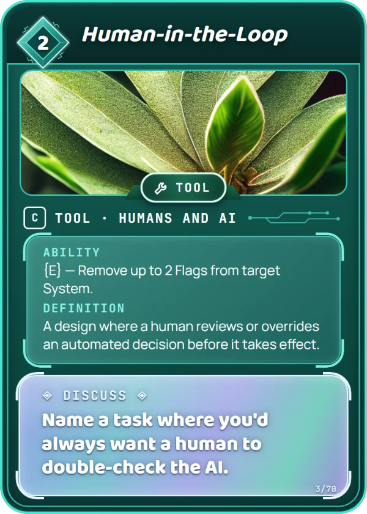

Humans and AI
A design where a human reviews or overrides an automated decision before it takes effect.
A bank's AI may flag a purchase as fraud, but a person checks before your card is actually blocked.
Name one decision you'd let an AI make alone and one you'd always want a person to check. What makes them different?
Name a task where you'd always want a human to double-check the AI.
Turn this card sideways to remove up to 2 Flags from target System. It costs 2 Data to play, and you can put it in your Training Set. How to play